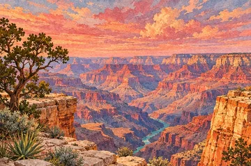
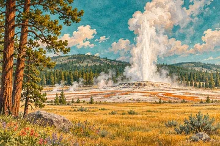
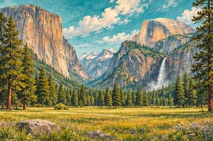

漢字飛車KANJI SPEED RUN
美國公路探險
漢字飛車
KANJI SPEED RUN
穿越五站美國風景，在字卡迎面而來時，
選出正確的造字法則。
公路路線
ROUTE GUIDE全程 5 站- STOP 01紐約New York City

STOP 02大峽谷Grand Canyon
STOP 03黃石公園Yellowstone
STOP 04優勝美地Yosemite- STOP 05邁阿密Miami Beach